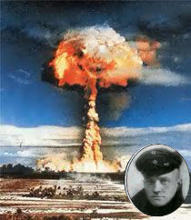

Forums galactiques > Taverne galactique : lieu de discussion informel > CONCOURS DE JOURNALISME. WANTED : journalistes !
Pages : 1
dieu 04/11 ETU 06:14  | Commandants, Il est bien dommage que jusqu'à présent aucun commandant ne se soit montré à la hauteur de la tâche de journaliste galactique! Il nous faudrait un journaliste rédigeant un compte rendu historique le plus synthétique, le plus neutre, et le mieux écrit par semaine, afin de garder une trace de l'Histoire galactique qui sera intégrée au background de la version suivante ! Aussi, tout commandant intéressé par un poste de journaliste peut se présenter ici. Les différents candidats auront 1 mois pour faire leurs preuves (4 comptes rendus donc). Et pour pimenter ce concours, prime de 100 000 000 de leems au meilleur journaliste selon Dieu, 50 000 000 au deuxième, et 10 000 000 au troisième. Critères objectifs : - style - orthographe - présentation - structure des articles - neutralité des articles - pertinence des analyses - ... L'idée est qu'au bout d'un mois, un ou plusieurs journalistes galactiques soient élus par l'Assemblée elle-même, voire rémunérés et contrôlés par les institutions galactiques qui auront d'ici là normalement été mises en place ! Que les intéressés se présentent ici sans plus attendre ! |
primarque 04/11 ETU 09:53 | J'ai longtemps été candidat comme Dieu le sais, mais je ne trouve malheureusement pas le temps de me tenir informé des événements de la galaxie. C'est donc avec tristesse que je laisse cette tache à d'autres. En passant, Cortana, je sais parler pour moi même... |
Djil 04/11 ETU 09:53 | je me sens aussi l'ame d'un ecrivain et jepense pouvoir assez bien remplir cette tache si vous voulez me mettre l'épreuve pour me tester donnez moi un theme et je vous enverrai un 1er jet... salutations cordiales, |
| Von Richthofen  04/11 ETU 18:40 | Je serais bien interessé( meme si je pense que le style n'y est pas encore tout à fait, mais je vais tout de meme essayé)! |
dieu04/11 ETU 19:53 | Aucun theme impose. Le but : d`ici quelques jours, apporter une synthese des evenements qui se sont produits depuis le dernier journal divin. Quand l`article est pret, que chacun des candidats me contactent par MP. Attention, lisez les criteres ci-dessus ! Tous les articles seront publies, et les 3 plus reussis seront recompenses comme annonce... |
dieu07/11 ETU 02:33 | Volontairs, au travail ! Avec l'actualité électorale, vous avez du boulot... ^^ |
dieu07/11 ETU 05:20 | Bon, je précise, suite à la réception d'un mp. Dieu est neutre vis à vis des institutions. Il se fiche pas mal qu'elles existent ou non, il met à disposition des outils pour qu'une institution légitime ne soit pas empêchée de voir le jour pour des raisons techniques. Cf le compte "gouvernement" associé à Newdeun, mais qui ne vaut rien d'énorme en lui même. La meilleure comparaison est le coup des transferts : si dieu ne "sécurisait" pas arbitrairement le contrat, personne ne pourrait commercer aussi facilement. Pour autant, ça n'oblige personne à commercer. Bref, pour revenir à notre sujet, la seule volonté divine est que la galaxie prenne en main l'écriture de son histoire. L'une des façons est que des journalistes soient récompensés par les autres commandants, ce qui me semble passer par l'Assemblée. Et EVENTUELLEMENT (mais pas forcément, selon ce que veulent les commandants) par un pouvoir public si celui-ci émerge... Dieu n'a pas le temps de faire le journaliste, ça serait bête que toute une partie de l'Histoire galactique soit oubliée ! Voilà pour les précisions. |
Necrid 07/11 ETU 11:28 | Surtout quand certains Commandants agissent dans l'ombre sans faire d'effets de manche pour le moins pathétiques... |
AlphonseHubert 07/11 ETU 12:15 | "Prendre la parole, décider nous-mêmes Délivrer nos vies des chaînes de l'argent ECRIRE NOTRE HISTOIRE A LA PREMIERE PERSONNE Etre enfin des Hommes et non des instruments" Bravo pour cette initiative, Dieu ! Il est important que chaque commandant, même le plus faible, prenne son destin en main. D'ailleurs, ça me rappelle étrangement le programme de l'AST... |
Djil07/11 ETU 20:29 | STOP!!! pas de politique a la taverne sinon je me fache !!!! |
AlphonseHubert07/11 ETU 20:31 | Pardonnez-moi, j'arrête. C'est promis. Sauf si on me provoque ;-) |
Djil07/11 ETU 20:39 | c'est bien le communisme mais parfois c'est un peu trop zélé a mon gout !!! ;-) |
Pages : 1
Forums galactiques > Taverne galactique : lieu de discussion informel > CONCOURS DE JOURNALISME. WANTED : journalistes !